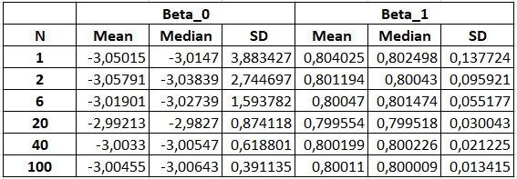
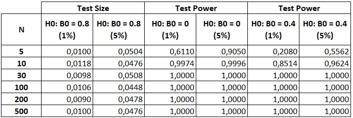
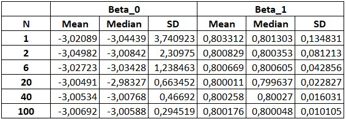

Overview
The objective of this exercise is to estimate the following model using the Feasible Generalized Least Squares (FGLS) method:
Where:
To estimate the model, 5000 samples were generated for the number of observations equal to 5, 10, 30, 200, and 500.
The application of the FGLS method involves the following steps:
- Estimate the model for each sample using Classical Least Squares.
- Extract the residuals and transform them.
- Estimate a model using MCC with the extracted residuals from step 2 as the dependent variable.
- Extract the predicted values and transform them to be used as weights.
- Estimate the model from step 1 using Weighted Least Squares, with the transformed weights from step 4 as the weighting factors.
Python Code and Analysis
In this section, we will present and analyze all Python code implementations along with their corresponding outputs.
import numpy as np
import pandas as pd
import statsmodels.api as sm
from scipy.stats import t, norm
from numpy.linalg import inv, cholesky
# Seed
np.random.seed(4678)
# Parameters
N = [1, 2, 6, 20, 40, 100]
num_simulations = 5000
results_df = pd.DataFrame()
# Estimated coefficients FGLS
beta_0_estimates = {j: [] for j in N}
beta_1_estimates = {j: [] for j in N}
# Estimated coefficients MCG Cholesky
beta_0_estimates_chol = {j: [] for j in N}
beta_1_estimates_chol = {j: [] for j in N}
# FGLS standard deviations
beta_0_std = {j: [] for j in N}
beta_1_std = {j: [] for j in N}
# MCG Cholesky standard deviations
beta_0_std_chol = {j: [] for j in N}
beta_1_std_chol = {j: [] for j in N}
# Test Size and Power Size
test_size_1 = {j: [] for j in N}
test_size_5 = {j: [] for j in N}
test_power_0_1 = {j: [] for j in N}
test_power_0_5 = {j: [] for j in N}
test_power_04_1 = {j: [] for j in N}
test_power_04_5 = {j: [] for j in N}
for n in N:
Omega = np.diag(np.tile([4, 9, 16, 25, 36], n))
# Cholesky Decomposition
P = cholesky(inv(Omega))
results = []
rejections_tf1_95 = 0
rejections_tf1_99 = 0
rejections_tf2_95 = 0
rejections_tf2_99 = 0
rejections_tf3_95 = 0
rejections_tf3_99 = 0
for _ in range(num_simulations):
# Generate values for X and U
X = np.column_stack((np.ones(n*5), np.random.uniform(1, 50, n*5)))
U = np.random.normal(0, np.tile([2, 3, 4, 5, 6], n), n*5)
# Generate our Y model
Y = X @ np.array([-3, .8]) + U
# OLS Estimation
model = sm.OLS(Y, X).fit()
# Extract the residuals and square their logarithm
model_residuals = model.resid
logRes2 = np.log(model_residuals**2)
"""
Estimate by OLS a model that uses as dependent variable the residuals
that we store in logRes2. Then extract the predicted values that will
be used to calculate the weights.
"""
logRes2_Hat = sm.OLS(logRes2, X).fit().fittedvalues
# Transforming weights
weight = 1 / np.sqrt(np.exp(logRes2_Hat))
# Estimate by Weighted Least Squares the model, using "weight" as the weight.
wls_model = sm.WLS(Y, X, weights=weight).fit()
# Extract the standard deviation that will allow us to calculate the t-statistics.
std_FGLS = wls_model.bse[1]
# Calculate the t-statistics to test the hypothesis of B_0.
Tstat_B1_wls = abs(wls_model.params[1] - 0.8) / std_FGLS
Tstat_B1_wls_1 = abs(wls_model.params[1]) / std_FGLS
Tstat_B1_wls_2 = abs(wls_model.params[1] - 0.4) / std_FGLS
"""
We found the matrix P at the beginning by using the de Cholesky decomposition.
We now use P to calculate the variables X_chol and Y_chol.
"""
# Pre-multiply X and Y by P
X_chol = P @ X
Y_chol = P @ Y
# Estimate by OLS a model whose dependent variable is Y_chol and explanatory variable X_chol.
ols_model_chol = sm.OLS(Y_chol, X_chol).fit()
# Extract the deviation from the model
std_chol = ols_model_chol.bse[1]
# Store estimated coefficients FGLS
beta_0_estimates[n].append(wls_model.params[0])
beta_1_estimates[n].append(wls_model.params[1])
# Store FGLS deviations
beta_0_std[n].append(wls_model.bse[0])
beta_1_std[n].append(wls_model.bse[1])
# Store estimated coefficients MCG Cholesky
beta_0_estimates_chol[n].append(ols_model_chol.params[0])
beta_1_estimates_chol[n].append(ols_model_chol.params[1])
# Store MCG Cholesky deviations
beta_0_std_chol[n].append(ols_model_chol.bse[0])
beta_1_std_chol[n].append(ols_model_chol.bse[1])
if Tstat_B1_wls > t.ppf(0.995, n*5-2):
rejections_tf1_99 += 1
if Tstat_B1_wls > t.ppf(0.975, n*5-2):
rejections_tf1_95 +=1
if Tstat_B1_wls_1 > t.ppf(0.995, n*5-2):
rejections_tf2_99 += 1
if Tstat_B1_wls_1 > t.ppf(0.975, n*5-2):
rejections_tf2_95 +=1
if Tstat_B1_wls_2 > t.ppf(0.995, n*5-2):
rejections_tf3_99 += 1
if Tstat_B1_wls_2 > t.ppf(0.975, n*5-2):
rejections_tf3_95 +=1
# Store Test Size and Test Power
test_size_1[n].append(rejections_tf1_99/5000)
test_size_5[n].append(rejections_tf1_95/5000)
test_power_0_1[n].append(rejections_tf2_99/5000)
test_power_0_5[n].append(rejections_tf2_95/5000)
test_power_04_1[n].append(rejections_tf3_99/5000)
test_power_04_5[n].append(rejections_tf3_95/5000)
Table 1 presents the summary statistics of the estimates performed for the coefficients and . We can observe that the measures of central tendency, such as the Mean and the Median, exhibit similar values across different sample sizes, both for and . It is also verified that both the Mean and the Median present values similar to the population values of and .
Furthermore, it is observed that the Standard Deviation decreases as the sample size increases, which suggests that the estimates become more precise as increases.
Table 1: Statistical Measures of Beta 0 and Beta 1

# Create a MultiIndex for the Beta FGLS coefficient columns.
# This will allow grouping "Mean", "Median" and "Deviation" under Beta_0 and Beta_1.
beta_columns = pd.MultiIndex.from_product([['Beta_0', 'Beta_1'], ['Mean', 'Median', 'SD']],
names=['', 'N'])
# Create a DataFrame to store the results of the Beta FGLS coefficients.
beta_results_df = pd.DataFrame(index=N, columns=beta_columns)
for j in N:
beta_results_df.loc[j, ('Beta_0', 'Mean')] = np.mean(beta_0_estimates[j])
beta_results_df.loc[j, ('Beta_0', 'Median')] = np.median(beta_0_estimates[j])
beta_results_df.loc[j, ('Beta_0', 'SD')] = np.mean(beta_0_std[j])
beta_results_df.loc[j, ('Beta_1', 'Mean')] = np.mean(beta_1_estimates[j])
beta_results_df.loc[j, ('Beta_1', 'Median')] = np.median(beta_1_estimates[j])
beta_results_df.loc[j, ('Beta_1', 'SD')] = np.mean(beta_1_std[j])
Next, in Table 2, the test sizes resulting from testing the null hypothesis are presented at significance levels of 1% and 5%. Additionally, the power of the test for evaluating the null hypotheses and is reported.
Table 2: Test Size and Test Power

# Create a dataframe with the results of the test sizes and power
test_results_df = pd.DataFrame(index=N, columns=['Test_Size_1', 'Test_Size_5', 'Power_Beta_0_1', 'Power_Beta_0_5', 'Power_Beta_0.4_1', 'Power_Beta_0.4_5'])
for j in N:
test_results_df.loc[j, 'Test_Size_1'] = np.mean(test_size_1[j])
test_results_df.loc[j, 'Test_Size_5'] = np.mean(test_size_5[j])
test_results_df.loc[j, 'Power_Beta_0_1'] = np.mean(test_power_0_1[j])
test_results_df.loc[j, 'Power_Beta_0_5'] = np.mean(test_power_0_5[j])
test_results_df.loc[j, 'Power_Beta_0.4_1'] = np.mean(test_power_04_1[j])
test_results_df.loc[j, 'Power_Beta_0.4_5'] = np.mean(test_power_04_5[j])
Regarding the test size, it is observed that it approaches the corresponding significance level as increases. That is, when testing at a 1% significance level, the test size approaches 1%, reaching this value when the size of exceeds 200 observations. The same occurs for the test evaluated at a 5% significance level: when exceeds 200 observations, the test size reaches the value 0.05.
When analyzing the power of the test, it is noted that for small sample sizes (between 10 and 30 observations), the power of the test resulting from evaluating and converges to 1, both at a 1% significance level and at a 5% significance level.
Cholesky Decomposition
We will now use the Cholesky decomposition to find a matrix such that , where is the variance-covariance matrix.
Once the matrix is obtained, we can pre-multiply both the dependent variable and the independent variables by and then estimate the model using Classical Least Squares (OLS) with the new transformed variables. This allows us to obtain the estimated coefficients through Generalized Least Squares.
Table 3: Statistical Measures of Beta 0 and Beta 1 estimated by GLS

# Create a DataFrame to store the results of the Beta MCG coefficients.
beta_chol_results_df = pd.DataFrame(index=N, columns=beta_columns)
for j in N:
beta_chol_results_df.loc[j, ('Beta_0', 'Mean')] = np.mean(beta_0_estimates_chol[j])
beta_chol_results_df.loc[j, ('Beta_0', 'Median')] = np.median(beta_0_estimates_chol[j])
beta_chol_results_df.loc[j, ('Beta_0', 'SD')] = np.mean(beta_0_std_chol[j])
beta_chol_results_df.loc[j, ('Beta_1', 'Mean')] = np.mean(beta_1_estimates_chol[j])
beta_chol_results_df.loc[j, ('Beta_1', 'Median')] = np.median(beta_1_estimates_chol[j])
beta_chol_results_df.loc[j, ('Beta_1', 'SD')] = np.mean(beta_1_std_chol[j])
Table 3 presents the descriptive statistics of the estimated coefficients from Generalized Least Squares (GLS). It is observed that both the Mean and the Median exhibit values that are similar to each other and to the true population value, for both and , regardless of the sample size.
The standard deviation of the estimated coefficients is decreasing, once again demonstrating the consistency property of the estimators. Furthermore, it is verified that the standard deviation of the coefficients estimated by GLS is smaller than that of the coefficients estimated by FGLS, indicating that estimation by GLS is more efficient than that by FGLS.
Conclusions
The finite-sample analysis shows that while the FGLS method is efficient under classical assumptions in large samples, its performance may deteriorate when these assumptions are violated or the sample size is limited. The estimation of the variance-covariance matrix plays a critical role in this behavior, as errors at this stage can introduce bias into the coefficient estimates.
In this context, the comparison with the Cholesky transformation method is particularly informative. Although both procedures aim to correct for heteroskedasticity or autocorrelation in the errors, the Cholesky method relies on an exact transformation of the model under perfect knowledge of the variance-covariance structure. It thus serves as an ideal benchmark in simulations: its performance represents the optimal scenario that FGLS should strive for. However, as observed, in the presence of misspecification, FGLS often falls short of this benchmark and may even underperform compared to OLS.
Therefore, in practical applications—especially with small samples or structural uncertainty—it is important to carefully weigh the risks of misspecification. In such cases, it may be preferable to rely on more robust estimators, such as OLS, rather than trusting in the theoretical efficiency of FGLS relative to an ideal, represented by the Cholesky method, that is rarely attainable in practice.